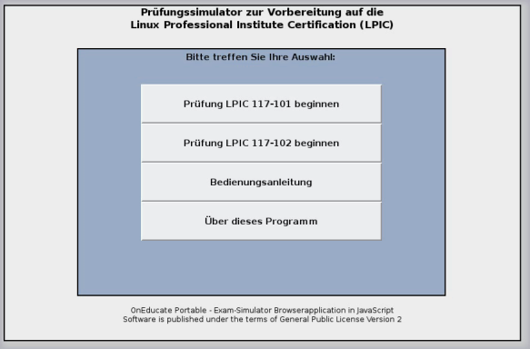
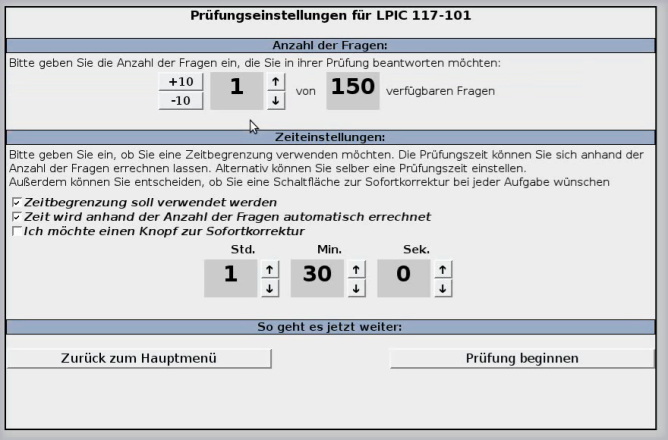
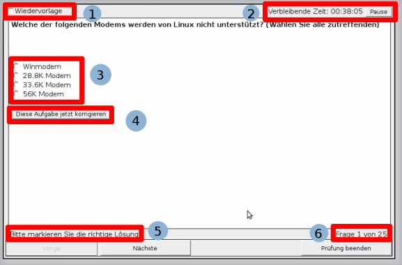
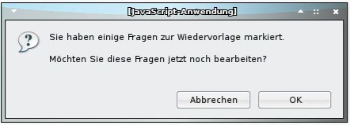
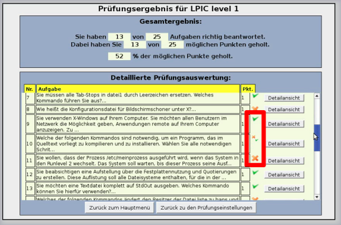

Bedienungsanleitung
Hauptmenü
Einstellungen
Während der Prüfung...
Wiedervorlage
Prüfung beenden und auswerten

Im Hauptmenü des Prüfungssimulators haben Sie die Wahl zwischen vier verschiedenen
Schaltflächen:
Die Einstellungen für die Prüfung erfolgen in drei Schritten:

Anzahl der Fragen angeben
Zunächst stellen Sie die Anzahl der Fragen ein, die in Ihrer Prüfung vorkommen sollen.
Dies erreichen Sie über die Schaltflächen, die mit ↑ und ↓ bzw. +10 und -10 gekennzeichnet sind.
Zeit- und Sondereinstellungen festlegen
In diesem Bereich können Sie zunächst ein paar generelle Optionen für Ihre Prüfung festlegen:
- Wenn dies markiert ist, wird eine Zeitbegrenzung verwendet.
- Wenn dies markiert ist, wird die Zeitbegrenzung anhand der Anzahl der gewählten Fragen automatisch eingetragen.
- Wenn dies markiert ist, haben Sie bei jeder Frage die Möglichkeit, die Frage sofort korrigieren zu lassen. Eine auf diese Weise korrigierte Frage lässt sich dann in derselben Prüfung nicht mehr bearbeiten.
Wenn Sie die voreingestellte Prüfungszeit ändern möchten, verwenden Sie hierfür die rechts neben den Stunden, Minuten und Sekunden befindlichen Schaltflächen ↑ und ↓. Passen Sie die Zeit an, bis sie Ihrem Wunsch entspricht.
ACHTUNG: Wenn Sie Zeit wird anhand der Anzahl der Fragen automatisch errechnet aktiviert haben, so wird die Zeit bei der erneuten Änderung der Anzahl der Fragen auf den neu errechneten Wert zurückgesetzt! Zurück zum Inhaltsverzeichnis
Das Aussehen und die Bedienung des Prüfungssimulators sind stark an den Aufbau der Originalprüfung angelehnt.
Dennoch gibt es gewisse Unterschiede, allen voran das Betreiben dieses Simulators in Verbindung mit einem Webbrowser.

Die Elemente im Test:
1. In diesem Feld markieren Sie die Frage zur Wiedervorlage,
woraufhin Ihnen am Ende der Prüfung angeboten wird, die Frage erneut zu bearbeiten (Näheres dazu im Abschnitt Wiedervorlage).
2. Anzeige der verbleibenden Zeit. Wenn Sie Ihre Prüfung zeitweise unterbrechen müssen (z. B. wegen eines Telefonats), klicken Sie auf Pause und die Zeit wird angehalten.
3. Antwortbereich für die aktuelle Aufgabe (Auswahlmöglichkeit oder Eingabefeld)
4. Knopf zur Korrektur der aktuellen Aufgabe (nur vorhanden, wenn in den Einstellungen aktiviert)
5. Hier steht die Arbeitsanweisung bzw. eine Erfolgs- oder Misserfolgsmeldung in der Korrekturansicht.
6. Aktuelle Frage und Gesamtanzahl der Testfragen
Haben Sie Fragen zur Wiedervorlage markiert, erhalten Sie beim Beenden der Prüfung folgende
Meldung:

Klicken Sie auf OK, gelangen Sie in den Wiedervorlagemodus und können die entsprechenden Fragen nochmals bearbeiten.
Klicken Sie auf Abbrechen, so überspringen Sie den Wiedervorlagemodus und gelangen direkt zur Prüfungsauswertung.
Im Wiedervorlagemodus entspricht der Aufbau der normalen Prüfungsansicht.
Der Unterschied besteht darin, dass sich über die Schaltflächen Nächste und Vorige
nur noch die Fragen ansteuern lassen, die zur Wiedervorlage markiert wurden.
ACHTUNG!!! IN DER ORIGINALPRÜFUNG MUSS FÜR DIE WIEDERVORLAGE EINE SCHALTFLÄCHE ANGEKLICKT WERDEN

Die Prüfungsauswertung besteht aus zwei Teilen:
Im oberen Teil sehen Sie die Gesamtauswertung des Tests,
aus der Sie ersehen können, wie viele Fragen Sie richtig beantwortet haben,
wie viele Punkte Sie dabei gesammelt haben und in welchem Bereich die prozentuale Punktauswertung Ihrer Prüfung liegt.
Bei einem Ergebnis über 70% richtig beantworteter Fragen kann von einem Bestehen der Prüfung ausgegangen werden.
Leider gibt es hierzu laut LPI keinen offiziellen Richtwert.
Im unteren Teil finden Sie die detaillierte Prüfungsauswertung.
Sie besteht aus einer Liste, die alle Aufgaben der Prüfung enthält.
Von links nach rechts stehen die Nummer der Frage, ein Auszug aus der Fragestellung sowie der Punktwert der Frage.
Rechts daneben sehen Sie eines von möglichen drei Symbolen:
 ) bedeutet, dass die Aufgabe komplett richtig gelöst ist und die Punkte für die Frage gutgeschrieben wurden.
) bedeutet, dass die Aufgabe komplett richtig gelöst ist und die Punkte für die Frage gutgeschrieben wurden. )steht für eine falsch beantwortete Frage, für die keine Punkte gut geschrieben wurden.
)steht für eine falsch beantwortete Frage, für die keine Punkte gut geschrieben wurden.Sie können sich jede Frage der Prüfung noch einmal in detaillierter Form anzeigen lassen. Hierzu verwenden Sie die Schaltfläche Detailansicht bei der jeweiligen Frage. Zurück zum Inhaltsverzeichnis